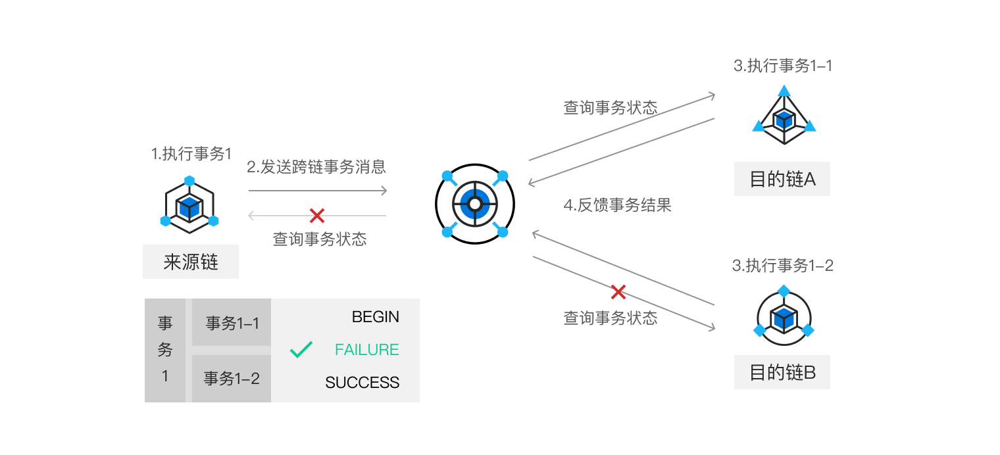

跨链事务方案
跨链需要保证跨链交易的原子性和一致性，即来源链和目的链上的交易要么都成功，要么都失败回滚。 为此，中继链提供了事务管理机制，通过内置的事务管理合约，来保证不同业务场景下跨链交易的事务性。
多链消息表事务方案是针对非资产交换类业务场景的事务方案，它可以支持一对一跨链和一对多跨链。
一对一跨链
当来源链业务合约发起跨链交易时，除了提供目的链的目标业务合约中要调用的方法和参数外，还可以提供来源链的回调方法和回滚方法。 来源链跨链网关捕获跨链事件封装成IBTP提交到中继链，并由中继链跨链事务合约进行处理。跨链事务合约将初始化该跨链交易所对应的跨链事务， 在跨链事务合约中以KV形式记录跨链事务ID和事务状态信息，其中跨链事务ID由**来源链ID || 目的链ID || IBTP index**组成，初始的跨链状态信息为TransactionStatus_BEGIN。
当目的链执行完跨链交易时，由目的链跨链网关得到执行的结果（成功或失败），并将该信息封装成IBTP receipt提交给中继链。 中继链跨链事务合约根据其中的回执信息，更新跨链事务ID的状态，如果成功，则状态更新为TransactionStatus_SUCCESS，否则为TransactionStatus_FAILURE。
如果跨链事务最终状态是成功，则来源链跨链网关调用来源链业务合约注册的回调函数进行回调；如果跨链事务状态为失败，则来源链跨链网关将调用来源链业务合约注册的回滚函数进行回滚操作。
一对多跨链
一对多跨链是指，在一个来源链的业务合约的交易中，抛出了多个指向不同目的链的跨链事件。 一对多跨链和一对一跨链的整体流程一样，只是其中事务分为全局事务和子事务的概念：
- 子事务：指来源链和某个目的链的跨链事务
- 全局事务：综合各个子事务的整体事务
因此在中继链的跨链事务合约中，为一对多跨链事务特别设计了一个事务信息结构来支持该场景下的跨链事务状态记录和更新。该结构如下：
type txInfo struct {
// 全局事务状态
globalState string
// 子事务信息，key为子事务ID，即各目的链的地址，value为子事务状态
childTxInfo map<string, string>
}
其中，全局事务状态和子事务初始状态为BEGIN。之后，各目的链的跨链网关获取跨链交易并提交给各目的链执行，目的链执行完子事务后由跨链网关根据执行结果向中继链反馈子事务状态，中继链事务管理合约将进行相应的更新：
-
如果交易执行成功，则将对应的子事务状态设置为SUCCESS，当所有子事务状态均为SUCCESS时，跨链事务管理合约将该全局事务ID对应的事务状态更新为SUCCESS
-
如果交易执行失败，则将对应的子事务状态设置为FAILURE，并将该全局事务ID对应的事务状态更新为FAILURE，
之后，各个应用链（包含来源链和目的链）的跨链网关可以获取中继链的全局事务和子事务的状态， 来对应用链进行业务上的“回调”操作或“回滚”操作。

跨链事务合约设计
中继链上的跨链事务管理合约接口设计如下：
// 一对一跨链事务初始化
Begin(txId string)
// 一对多跨链事务初始化
BeginMultiTXs(globalId string, childTxIds ...string)
// 报告事务执行结果
Report(txId string, result int32)
// 获取事务状态
GetStatus(txId string)